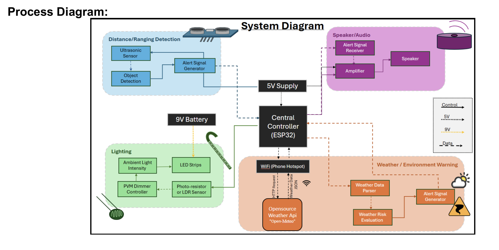
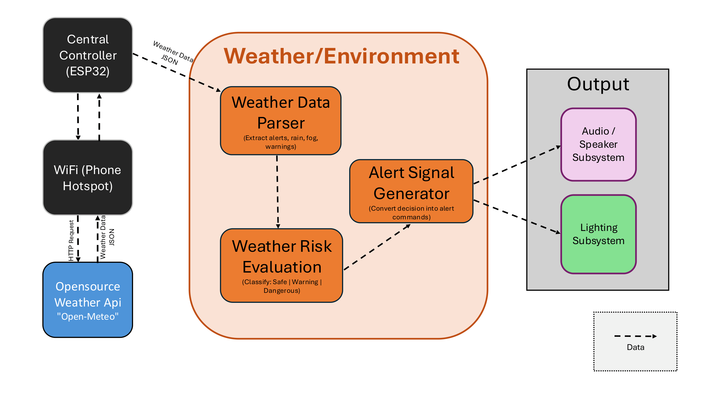

Smart Cane with Warnings and Weather Alerts

Class group project for an intelligent cane system that combines ultrasonic sensing, weather alerts, and audio feedback. My work covered WiFi connectivity, API integration, text-to-speech playback, and the full FreeRTOS restructure that made the integrated system actually stable.
My Contribution
- Implemented WiFi connectivity for online updates and live request handling
- Integrated weather forecast and warning APIs for location-aware alerts
- Added Google Translate-based text-to-speech audio output for spoken notifications
- Worked with the ultrasonic sensor flow used for obstacle detection warnings
- Diagnosed system instability in the integrated build and restructured the entire codebase around a FreeRTOS task architecture running across both ESP32 cores
The Integration Problem
Each module worked fine in isolation. Once we integrated everything: sensor reads, API polling, TTS playback: the system became unreliable. Sensor updates were delayed, alerts misfired, and behavior was inconsistent under any real processing load. The single-loop architecture meant every operation was blocking everything else.
I isolated the timing of each component to figure out where delays were
accumulating. The issue wasn't in any individual module: it was the
architecture. Putting everything sequentially in loop() meant
a slow API call would starve the sensor, and a TTS output would block the
whole system.
FreeRTOS Restructure
I split the system into independent FreeRTOS tasks, each pinned to a core or given a priority appropriate to its timing requirements:
- sensor task: continuous ultrasonic acquisition at fixed intervals
- processing / filter task: consumes sensor data, applies logic, decides alert state
- alert / output task: handles TTS playback and API-triggered notifications
Tasks communicate through FreeRTOS queues instead of shared variables, so there's no race condition risk and each module stays decoupled. After restructuring, sensor readings were consistent, alerts fired in real time, and the system ran stably through extended testing. Adding new features also became straightforward: each new module just becomes another task with a well-defined interface.
Process Diagrams


Source Code
Tech Stack
ESP32, FreeRTOS, C, WiFi, Ultrasonic Sensing, Google Translate API, Weather API, Text-to-Speech